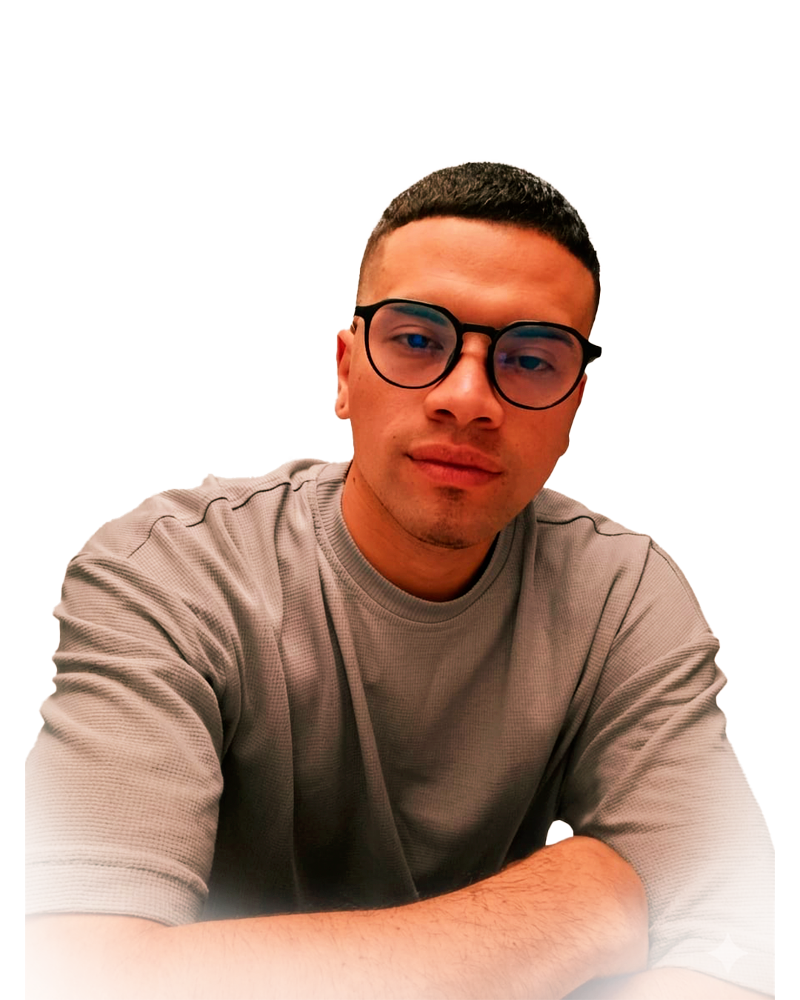

MI
PORTAFOLIO GRAFICO
SOBRE MI
Soy tecnólogo en formación de desarrollo de medios gráficos visuales. Implemento mi aprendizaje en cada proyecto. Mi objetivo es crear experiencias que conecten con las personas y dar solución a problemas, utilizando herramientas como Photoshop, Illustrator y After Effects, con un toque de código para dar vida a mis ideas.

MIS HABILIDADES
GRANO DE ORO
Manual de identidad de marca
El siguiente proyecto se creó, con el objetivo de aplicar las técnicas de investigación y creación de una marca. Usando herramientas de edición como Photoshop e Illustrator para una mejor composición.
Ver másCRITICAL THOUGHT
Marca Personal
Este proyecto se creó, con el objetivo de identificar mi personalidad, cualidades y plasmarla en una marca personal. Usando herramientas de edición como Photoshop e Illustrator para una mejor composición.
Ver más
FLAYER TIPOGRÁFICO
Tipografía con movimiento
Estas piezas vectoriales, se diseñaron con el fin de experimentar con el movimiento de la tipografía y cómo esta puede ser un elemento principal en una composición.
Ver más
PANACHI PROYECTO
Parque ecológico
Estas piezas gráficas para redes, se crearon de forma estratégica para resaltar el atractivo turístico e identidad de marca del parque ecológico Panachi.
Ver más
PROYECTO ASTROLUMEN
Branding y creación de identidad de marca
Este es un proyecto en el cual abarca toda la creación e investigación desde 0, de una marca emergente como astrolumen para integrarse en el mercado a nivel nacional en Colombia.
Ver más